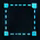
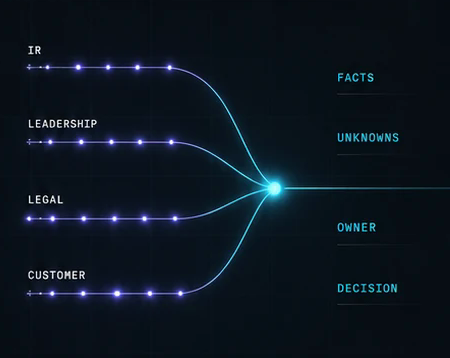
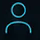
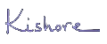
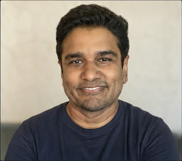

Clarity
We turn fragments into a shared
picture: what happened,
what we know, and what
remains unknown.
Outcome: confidence in the facts
For the part after detection
When a serious incident crosses identity, cloud,
customer data, and counsel, the evidence
fragments—and the next decision gets harder
to defend.
30 minutes with the founder · tabletop or
sanitized · no production access

Every team sees part of it. None have all of it.
Decisions made in that gap create risk,
delay, and exposure.

We turn fragments into a shared
picture: what happened,
what we know, and what
remains unknown.
Outcome: confidence in the facts
We align incident, leadership,
and legal on the same
understanding and the
next right move.
Outcome: one team, one direction

We define who owns each
decision and the evidence
needed to move it forward.
Outcome: clear ownership, clean handoffs
We shape the record and
rationale so you can
stand behind the call
you make.
Outcome: decisions you can defend
Founder-led
I’m Kishore Fernando. I started InaiSec to help security
leaders make better decisions in the part after detection—
where the business, legal, and technical realities collide.
Bring me one incident that’s still open in your head.
I’ll listen, ask better questions, and share what I’d do
in your shoes.

Kishore Fernando Founder, InaiSec
Start a first conversation. No decks. No access.
Just a clear head and a useful discussion.